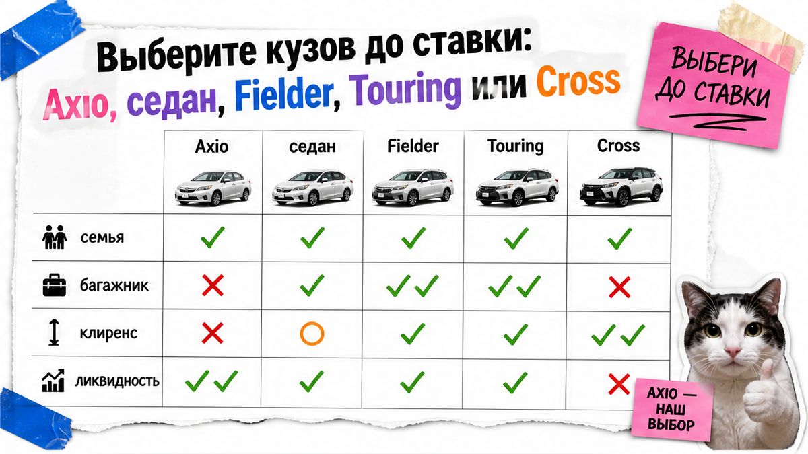
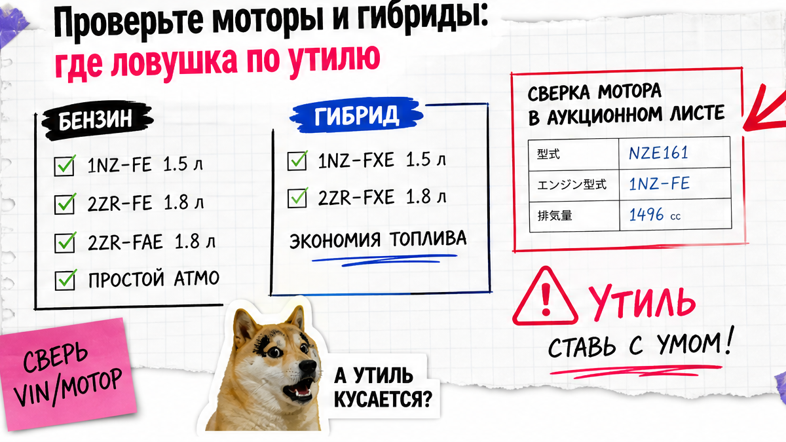
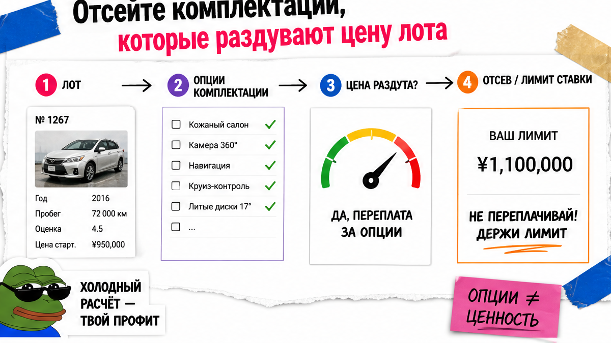

Андрей из Новосибирска уже почти кликнул ставку на красивую "Corolla Hybrid 4.5" с панорамой. Потом выяснилось: это Corolla Cross 2.0-класса по мощности, а не компактный Axio 1.5, плюс в листе шум подвески и XX на задней панели. Типичная боль: путаешь кузова под словом Corolla, боишься утиля на гибрид и не читаешь красные флаги листа. Ниже – как выбрать тойота королла из японии до ставки: кузов, мотор и чеклист из 10 пунктов.
TL;DR / Быстрый инсайт: Под именем Corolla в Японии живут разные машины: Axio и седан, Fielder и Touring, плюс Corolla Cross. Сначала выберите кузов под задачу, затем сверьте тип мотора в листе (гибрид считают по сумме мощностей). Цель по оценке – 4–4.5; R/RA и XX на силовых – стоп. До ставки пройдите 10 пунктов: "ставлю / прошу допфото / пропускаю".
По сводкам Автостата через Autonews за январь–сентябрь 2026 Corolla – лидер среди б/у Toyota в импорте в РФ (17 236 шт.), Япония даёт около 63% импорта марки. Линейка Axio и Fielder завершила производство около октября–ноября 2025: на аукционе они остаются как б/у, а свежий японский каталог по седану, Touring и Cross чаще показывает гибрид. Красивые фото не отменяют лист.
Мы в Авто-Сейлс во Владивостоке смотрим такие лоты каждый день. Задача простая: чтобы вы за 5 минут понимали, ставить или нет, и не гадали по хрому.

В поиске пишете "королла из японии", а на аукционе видите пять разных машин. Пока кузов не выбран, любая ставка – лотерея.
| Кузов | Кому подходит | На что смотреть до ставки |
|---|---|---|
| Axio / седан E210 | Город, ежедневные поездки, такси-формат | Износ салона vs пробег, пометки коммерческого использования |
| Fielder | Семья, багаж, дача | Задняя схема: зона багажника и бампер на XX/W |
| Touring (E210) | Универсал нового поколения | Не путать с Fielder в заголовке объявления |
| Corolla Cross | Клиренс, снег, высокая посадка | Это кроссовер, не "просто Corolla"; днище и пороги после зим |
На практике: запишите задачу одним предложением – "город и двое взрослых", "семья и чемоданы", "снег и бордюры". Под это берите только один тип кузова. Остальные лоты отсекайте, даже если там красивая панорама.
Сделайте: фиксируйте строку "мне нужен Axio / Fielder / Touring / Cross" до любой ставки. Не делайте: покупать "просто Corolla", потому что на фото она "как новая".

Вторая боль – страх переплатить за гибрид или 2.0. Готовых сумм в статье нет: цифры меняются, а статичный "калькулятор" быстро врёт. Считаем принцип, итог – в каталоге.
Сначала откройте в аукционном листе тип кузова (буквы вроде ZWE… или ZRE…). На пальцах:
Типичная ошибка – верить заголовку "Hybrid 1.8", а мощность и объём не сверить в листе. Для физлица бензиновые Corolla примерно 1.2–1.8 обычно проще проходят льготный коридор мощности. Мотор около 2.0 (класс вроде M20A) – частая ловушка переплаты по утилю относительно 1.8. Гибрид Toyota – параллельный: утиль считают как сумму мощности ДВС и 30-минутной мощности электромотора; цифру 30 мин берут из документов конкретной машины (ОТТС / СБКТС / ЭПТС).
Ступень объёма после 1500 см³ меняет единую ставку: 1.5 и 1.8 – разные истории. Возрастной коридор для физлица чаще смотрят как 3–5 лет; лоты младше или старше – только после отдельного расчёта.
Сделайте: до ставки выписать из листа тип (гибрид/бензин), объём и мощность. Не делайте: ставить на "жирный" 2.0 или гибрид без сверки в каталоге avto-sales125.ru.

Люк, панорама и GR-обвес красиво выглядят в ленте. Новичку важнее: год в коридоре 3–5, мотор без ловушки утиля, оценка от 4, желательно второй ключ и сервисная книжка.
Например, лот с панорамой и оценкой 3.5 проигрывает спокойному Axio 4.5 без хрома, если цель – ездить. Спорт-пакет оставляйте на второй круг, когда базовый чеклист уже зелёный. Свежий японский ряд Corolla / Touring / Cross смещается к гибриду; бензин на аукционе чаще уже с пробегом – это нормально для б/у рынка.
Сделайте: бюджет сначала в состояние и проход по таможне. Не делайте: переплачивать за опции до проверки листа и мотора.
Схема до ставки:
Задача машины → Кузов (Axio / Fielder / Touring / Cross) → Тип мотора в листе → Льготный коридор (расчёт в каталоге) → Оценка 4–4.5 → Схема и комментарии → 10 пунктов → Лимит ставки
Красивые ракурсы не заменяют лист. Читайте по порядку: идентификация → общий балл → салон → схема кузова → рукописные замечания → решение. Ниже – шаг за шагом.
Коды схемы на пальцах: A – царапина, U – вмятина, W – ремонт или перекрас, XX – замена панели, S/C – ржавчина или коррозия, G – стекло. Corolla, Axio и Fielder – частая мишень скрутки пробега. Лист иногда подделывают: без сверки полного номера кузова история может оказаться чужой.
Сделайте: решение "ставлю / допфото / нет" только после схемы и комментариев. Не делайте: игнорировать R/RA и XX на силовых из-за красивых фото.
Критерий результата: выберите кузов и мотор, проверьте лист по 10 пунктам. В итоге сможете за 5 минут решить по любому лоту Corolla: "ставлю / прошу допфото / пропускаю".
Если хотя бы один пункт "красный" – ставка сегодня не нужна. Спокойный пропуск дешевле, чем месяцы ожидания "не той" машины.
Сделайте: пройти список до клика. Не делайте: "потом разберёмся" после выигрыша лота.
Откройте 2–3 реальных лота Corolla и прогоните их по схеме выше. Получите сегодня понятный результат: один выбранный кузов, честный лист и лимит ставки или отказ.
Нужен расчёт под ключ и живой разбор лота – откройте каталог Авто-Сейлс или напишите в Telegram avtosales125. Форм на странице нет: подбор и цифры живут в каталоге и переписке. Офис: Владивосток, Днепровская 40а стр. 4.
Материал проверен: редакция Авто-Сейлс (эксперты по авто под заказ из Японии, Кореи и Китая).
Достоверность: факты сверены с открытыми сводками Автостата/Autonews по импорту Toyota за янв–сент 2026, гайдами по аукционным листам 2026 и практикой сопровождения заказов во Владивостоке; актуальные расчёты утиля и подбор – в каталоге.
Cross – кроссовер с другим клиренсом и посадкой, не седан Axio и не универсал Fielder/Touring. До ставки отдельно смотрите днище, пороги и мощность гибрида: это другая машина по классу и часто по утилю. Не берите Cross, если нужен компактный городской седан.
Седан и Axio проще для города; Fielder чаще берут под семью и багаж. Ликвидность зависит от региона и состояния: убитый багажник у Fielder и "такси-салон" у Axio режут цену сильнее названия. Сначала лист, потом спор про кузов.
Да, гибриды с японского аукциона возят напрямую через Владивосток. Перед ставкой подтвердите гибрид кодом типа кузова и посчитайте утиль по сумме мощностей в каталоге, а не "по ощущениям" из объявления.
Практический оптимум для импорта – 4 и 4.5. Оценки S и 5 часто идут с переплатой. R, RA, 0 и "***" новичку лучше пропускать без отдельной экспертизы.
Чистый лист и мотор в льготном коридоре. Панораму и GR-обвес смотрите только после зелёного чеклиста из 10 пунктов. Иначе платите за хром и получаете сюрприз на схеме.
Сверяйте полный номер кузова с серийником в листе, в карточке лота и в экспортных документах. При любом расхождении – стоп и доппроверка, без ставки вслепую.